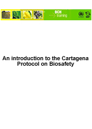

Download the complete PDF manual
This module briefly outlines some of the key elements of the Cartagena Protocol that are of importance for the Biosafety Clearing House. It includes:
- briefs on the background to and purpose of the Protocol;
- working procedures that apply; and
- institutional and administrative arrangements.
Audience:
This module is designed to provide guidance to users of the Biosafety Clearing-House (BCH). It is developed for a non-technical audience with little or no knowledge of the Cartagena Protocol and the BCH, but with a need to understand the Cartagena Protocol on Biosafety.
Purpose:
As an introduction to the Cartagena Protocol on Biosafety, this module provides the basics:
- To understand the decision-making and communications processes involved in the Cartagena Protocol;
- To introduce the Biosafety Clearing-House as the major vector/support for the Protocol’s communication process.
This module does not intend to provide a detailed or exhaustive guide on the Cartagena Protocol itself. For this purpose, the IUCN Guidelines on the Cartagena Protocol on Biosafety [http://bch.cbd.int/database/record.shtml?id=41476] provide deeper and more documented information.